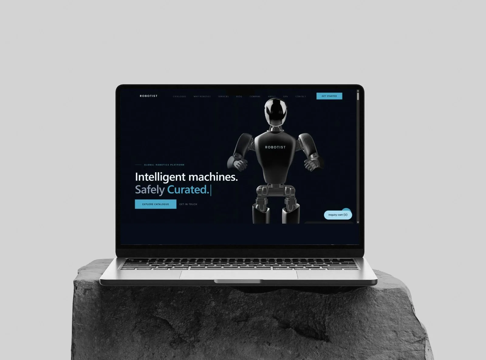
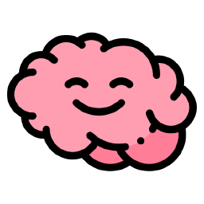

STRATEGY / IDENTITY / EXPERIENCE
Different worlds.
A Pulse through each.
Selected collaborations.
What each one changed.


 01
01A daily ritual,
reconsidered.
Personal care · Strategy, identity & digital

Firefly Global02
Care,
within reach.
Telepsychiatry · Website

03
Making robotics
human.
Robotics · Brand & digital

 04
04A place
for presence.
Companionship · Identity & spatial experience

 05
05From scattered tools
to a shared workspace.
Creative operations · Product & workflow

A little bottle.
A whole occasion.
Spirits · Identity & packaging

07
Science,
shared.
Research · Identity & digital platform

Make room
for play.
Learning · Brand & game experience

 09
09Knowledge,
made discoverable.
Cultural knowledge · Digital experience


10A little more
of you.
Self-reflection · Identity & digital experience

 11
11An instinct,
made visible.
Preference research · Identity & product design